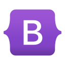
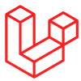

Bootstrap (известен как Twitter Bootstrap) - свободный набор инструментов для проектирования сайтов и веб-приложений. В нем содержаться HTML и CSS-шаблоны дизайна кнопок, блоков, меток, и других частей интерфейса. Новейшая на данный момент версия - Boostrap 5. Изначально фреймворк разрабатывался как внутренняя библиотека для Twitter, однако после нескольких месяцев был выпущен под всем нам известным названием. Основными элементами, которые стилизируются, являются стилизация медиа, таблиц, навигации, диалоговые окна, формы.
React (также React.js или ReactJS) - библиотека для JavaScript, использующаяся для создания пользовательских интерфейсов. Также он может использоваться для создания одностраничных и мобильных приложений. Его целью служит предоставить высокую скорость разработки и простоту. Зачастую React используется в совокупе с другими библиотеками, такими как GraphQL, Redux. Существует также расширение, позволяющее использовать HTML-документ для описания структуры интерфейса - JavaScript XML (JSX). Помимо отрисовки HTML-кода в браузере, фреймворк также используется для отрисовки динамических графиков, которыми, например, пользуется Facebook.
Vue (Vue.js) - JavaScript-фреймворк для создания пользовательских интерфейсов. Легко совмещается с другими библиотеками. Большинство разработчиков называют Vue прогрессивным и постепенно адаптируемым с другими фреймворками. Они считают данную библиотеку более простой в освоении, сравнивая его с Angular. Для старта появляется возможность использования только JS и HTML. Иногда может потребоваться TypeScript. У фреймворка имеется довольно информативная документация, на большинствах языках, находящаяся на ресурсе vuejs.org Существует 2 версии библиотеки - vue-nuxt и production (стабильной). Отличие лишь в том что версия для разработки может выводить информацию и предупреждения при отладке. В то время как production такого не имеет.

Angular - фреймворк для JS. В основном используется для разработки одностраничных сайтов. Цель библиотеки очень схожа с другими фреймворками - упрощение тестирования и написания кода. Фреймворк напрямую работает с HTML, в котором содержаться пользовательские атрибуты и связывает области страницы с моделью, состоящую из переменных JS. Angular адаптирует и значительно расширяет традиционный HTML, обеспечивая двухсторонюю привязку данных, что позволяет синхронизировать модель. Двусторонее связывание данных, имеющееся в Angular, является отличительной чертой, т.к оно освобождает от работы с шаблонами, и сильно уменьшает количество кода.

Laravel - фреймворк для языка PHP, предназначенный для разработки с использование MVC. Создавался как более функциональная альтернатива CodeIgniter, не подразумевающий доп. функции. На сегодняшний день активно применяют Laravel 9 версии. Основными особенностями библиотеки являются: пакеты, позволяющие создавать и подключать модули Composer; очереди, дающие возможность выполнять задачи без замедления интерфейса и API; миграции, с помощью которых, можно управлять базой данных; встроенный пакет для Docker.
Symfony - фреймворк написанный на PHP. Как и все существующие библиотеки предлагает инструменты для упрощения веб-разработки. Также имеет поддержку современных баз данных (например, MySQL, SQLite), но при этом информация в БД должна быть связана с моделью объекта. Сам фреймворк поддерживается французской компанией SensioLabs. Symfony используется во многих проектах, в том числе и в сервисе Delicious. Помимо Delicious на фреймворке написана одна из самых активно использующихся CMS - Drupal.
Django - фреймворк для веб-приложений на Python. При разработке сайта используют одно или несколько приложений, которые стоит делать подключаемыми. Основополагющий принцип фреймворка - DRY, имеющий смысл в том чтобы сократить количество повторения информации. Библиотека предоставляет множество инструментов для упрощения веб-разработки, на подобии обработчика форм, валидации принимающихся данных, механизмы кэширования. Помимо PostgreSQL, Django может работать с такими базами данных, как MySQL, SQLite, DB2. Также в фреймворке присутствует собственный веб-сервер.

Flutter - фреймворк, содержащий комплект инструментов для создания мобильных приложений на платформах Android и IOS. Также библиотека позволяет делать веб-сайты, и десктоп приложения для Windows, Linux, macOS. Самая первая версия, выпущенная в 2015 году, носила название Sky и работала только на Android. Спустя 6 лет, в 2021 была реализована возможность создания десктоп приложений. Основа разработки на Flutter - язык программирования Dart и библиотека Foundation. Дизайн интерфейса написанных на фреймворке, предлагает использование виджетов, как констант - неизменяемых объектов.